सुविकल्प: Mine Repurposing Tool
Select factors and sub-factors to discover suitable repurposing options for your mining site
![Coal Controller Organisation emblem]()
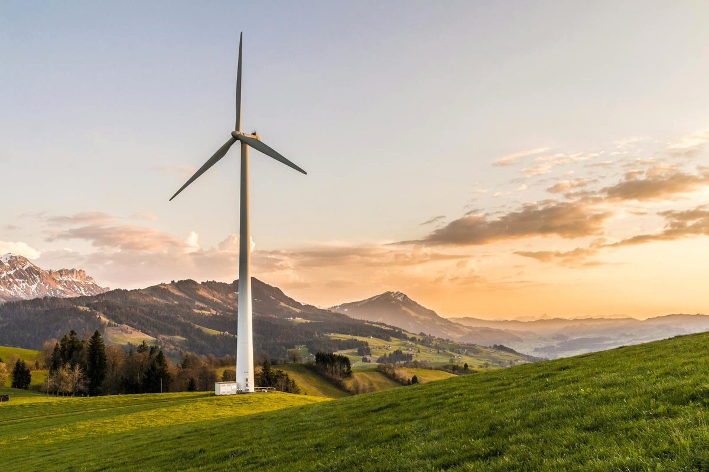
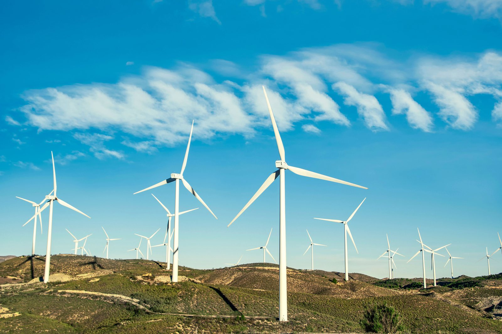
Defines the project concept, strategic rationale, site suitability criteria, and indicative scale options for wind-farm development on closed coal mine land.
A Wind Farm / Renewable Energy Park on closed coal mine land converts suitable overburden dumps, ridgelines, reclaimed plateaus, and haul-road corridors into clean-power infrastructure. The proposed project may include:
This is a selective repurposing option — not a universal one. A closed mine is suitable only where wind resource, land availability, geotechnical stability, grid evacuation, access logistics, environmental sensitivity, statutory permissibility, and community acceptance can all be satisfied.
Critical constraint: Land availability alone does not make a wind project bankable. Wind speed, turbulence, grid capacity, access logistics, geotechnical stability, and community acceptance are decisive — advance only where measured wind resource and grid evacuation are strong enough.
The following matrix provides a structured checklist for assessing the suitability of the proposed site for the selected repurposing option. It identifies the key physical, technical, environmental, infrastructure, legal, and owner-side readiness parameters that should be reviewed before the project is advanced to the next stage of development. The purpose of this matrix is to help the project owner understand existing site conditions, technical requirements, potential constraints, and preparatory actions required before feasibility studies, approvals, or tendering are initiated.
| Category | Sub-category | What to Assess / Prepare | Why It Matters | Owner-side Readiness |
|---|---|---|---|---|
| Land / Area | Total land area | Gross area, usable area, exclusion zones, turbine setback areas, crane-pad space, substation land, access-road corridors | Determines possible number of turbines, spacing, layout, and evacuation route | Land map and usable-area estimate |
| Land / Area | Land contiguity | Fragmentation, encumbrances, internal mine barriers, public pathways, inaccessible patches, restricted zones | Turbine locations and access rights must be secured | Parcel continuity and right-of-way note |
| Land / Area | Topography / grading | Ridges, elevated dumps, plateau edges, slope, cut-fill requirement, road gradient, platform levels | Affects wind flow, turbine logistics, crane movement, foundation cost, and safety | Topographic survey and slope map |
| Land / Area | Ground condition | Bearing capacity, reclaimed-fill quality, overburden dump stability, settlement, subsidence, underground voids, old workings | Turbine foundations are heavy dynamic structures; unstable ground creates safety and performance risks | Geotechnical, dump-stability, and subsidence investigation |
| Site Context | Wind resource | Wind speed, wind direction, wind shear, turbulence intensity, extreme wind, seasonal generation profile, long-term correction | Primary viability factor; small differences in wind speed significantly affect energy generation | Desktop wind atlas screening and wind-measurement plan |
| Site Context | Grid proximity | Existing substations, transmission lines, voltage level, spare bay, grid capacity, evacuation route, curtailment history | Determines whether generated energy can be evacuated and monetised | Grid-evacuation feasibility note |
| Site Context | Access | Road width, turning radius, bridge capacity, blade transport route, crane movement, last-mile road strengthening | Modern turbines require movement of long blades, heavy nacelles, towers, and large cranes | Access and logistics note |
| Environmental & Social | Bird / bat sensitivity | Migratory routes, nesting areas, raptor activity, habitat sensitivity, collision risk | Wind farms can affect birds and bats; screening and mitigation are required | Avifauna and biodiversity screening note |
| Environmental & Social | Noise / shadow flicker | Distance from settlements, receptors, turbine lighting, shadow-flicker modelling, visual corridors | Important for community acceptance and environmental approvals | Noise, shadow-flicker, and visual screening |
| Legal / Approvals | Mine closure status | Closure plan, reclamation status, hazardous areas, restricted zones, mine-safety permissions | Determines whether new infrastructure can be legally developed | Closure linkage note |
The following matrix presents an indicative relationship between available site area, project scale, technical configuration, and likely development potential. It is intended to support preliminary planning by helping the project owner identify the appropriate scale and configuration for the proposed repurposing option. The values and recommendations are indicative and should be refined through detailed feasibility studies, site surveys, engineering assessments, and relevant technical and commercial evaluations.
| Land Area | Scale | Project Size | Typical Configuration | Use Case |
|---|---|---|---|---|
| 10–25 ha | Pilot / demonstration | 1–5 MW | 1–2 turbines, met mast / LiDAR, compact evacuation | Demonstration project, mine-area green-power pilot, training asset |
| 25–75 ha | Small wind project | 5–15 MW | 2–5 turbines, compact pooling system, O&M cabin | Captive supply, local industrial supply, institutional green power |
| 75–250 ha | Small to medium wind farm | 15–50 MW | Multiple turbines, 33 kV collector system, pooling substation | Open access, group captive, DISCOM PPA, corporate PPA |
| 250–750 ha | Medium wind / hybrid park | 50–150 MW | Wind farm with dedicated substation, evacuation line, possible solar and BESS integration | Utility-scale wind, industrial decarbonisation, corporate offtake |
| 750–1,500 ha | Large renewable-energy park | 150–300 MW | Multi-phase wind-solar-storage park with high-voltage evacuation | Large PPA, PSU / DISCOM offtake, green industrial supply |
| 1,500 ha+ | Flagship mine-transition energy park | 300 MW+ | Multi-phase wind-solar-BESS with advanced forecasting and energy management | Regional green-energy hub, RTC renewable supply, industrial energy transition |
Describes the eight implementation models available for wind-farm development on mine land and the key factors that determine model selection.
The following table outlines the possible implementation models that may be considered for developing the proposed repurposing project. These models differ in terms of ownership structure, funding responsibility, private sector participation, operational control, and long-term risk allocation. The purpose of this table is to help the project owner compare broad development routes and select an implementation approach that aligns with its financial capacity, institutional preference, risk appetite, and long-term asset management objectives.
| Model | Core Feature | Broad Suitability |
|---|---|---|
| EPC | Owner funds, develops, and retains full ownership; EPC contractor designs, procures, constructs, and commissions | Suitable where owner wants full ownership, has funding capacity, and has a clear captive / strategic power demand |
| EPC + O&M | Owner finances and owns the Wind Farm; specialist agencies manage turbine O&M, BOP, SCADA, forecasting, substation, and reporting | Suitable where ownership and green-power benefit are important but owner does not want to operate wind assets directly |
| RESCO | RESCO finances, installs, owns, operates, and maintains the Wind Farm; owner may provide land and receive lease / commercial benefits | Suitable where owner wants renewable-energy benefit without upfront CAPEX, turbine-performance risk, or O&M burden |
| BOOT | Developer finances, builds, owns, and operates during concession period; transfers asset back at the end of term | Suitable where owner wants to reduce upfront capital burden and eventually receive the asset |
| BOO | Developer finances, develops, owns, and operates on a long-term basis without mandatory transfer | Suitable where long-term private ownership is acceptable and owner benefit is through lease rent or revenue share |
| DBFOT | Private concessionaire designs, builds, finances, operates, and transfers under a structured PPP arrangement | Suitable for larger or more complex wind / hybrid projects requiring private finance and eventual transfer |
| Concession / Lease-Develop-Operate | Owner provides land and access rights; concessionaire develops, operates, and commercialises the Wind Farm | Very suitable where owner wants to retain land control but allow a specialist developer to manage investment, construction, offtake, and O&M |
| Hybrid | Owner provides enabling works (land, roads, drainage, grid corridor, common substation); private parties invest in turbines, BOP, O&M, and commercialisation | Suitable where the site has strategic mine-transition value but needs shared risk, phased development, and strong livelihood obligations |
The following comparative assessment evaluates the major implementation models across key decision parameters such as investment requirement, ownership control, financing responsibility, contractual complexity, risk transfer, and long-term economic benefit. This matrix is intended to support early-stage decision-making by highlighting the relative strengths and limitations of each model. The final choice of model should be guided by the specific circumstances of the project, including its scale, commercial viability, applicable policy framework, and the owner's institutional preference.
| Evaluation Parameter | EPC | EPC+O&M | RESCO | BOOT | BOO | DBFOT | Concession / LDO | Hybrid |
|---|---|---|---|---|---|---|---|---|
| Upfront investment by Mine Owner | High | High | Low | Low–Moderate | Low | Low–Moderate | Low–Moderate | Variable |
| Need for private financing | Low | Low | High | High | High | High | Moderate–High | Varies |
| Ownership retained by Mine Owner from start | Yes | Yes | No (unless buyout) | No | No | Usually no during concession | Land retained; dev rights granted | Varies |
| Land control retained by Mine Owner | High | High | High if lease/licence structured | High | Moderate–High | High | High | High |
| Long-term control over Wind Farm asset | High | High | Moderate through contract | Moderate, improves post-transfer | Low | Moderate–High through concession | Moderate | Varies |
| Owner exposure to wind-resource risk | High | High | Low–Moderate | Low–Moderate | Low | Low–Moderate | Low–Moderate | Shared |
| Owner exposure to O&M risk | High | Moderate | Low | Low | Low | Low | Low | Shared / variable |
| Suitability where owner has funds | High | High | Moderate | Moderate | Low–Moderate | Moderate | Moderate | High |
| Suitability to reduce upfront CAPEX | Low | Low | Very High | High | High | High | High | High |
| Contractual complexity | Low–Moderate | Moderate | Moderate–High | High | High | Very High | High | High |
| Design & development complexity mgmt | Owner-led | Owner-led with specialist | Developer / RESCO-led | Developer-led | Developer-led | Developer-led (formal PPP) | Concessionaire-led / shared | Shared |
| Need for specialised technical operations | High | Very High | Very High | Very High | Very High | Very High | Very High | Very High |
| Suitability for green-infrastructure objectives | High | Very High | High | High if contractually protected | Moderate | High if safeguarded | High if protected | Very High |
| Suitability for commercial / offtake-driven development | Moderate | High | Very High | High | High | Very High | Very High | High |
| Suitability for phased / modular development | Moderate | High | High | Moderate–High | Moderate–High | High | Very High | Very High |
| Construction / implementation timeline risk | Moderate | Moderate | Moderate–High | Moderate–High | Moderate–High | High | Moderate–High | Variable |
| Retention of long-term economic benefit by owner | High | High | Moderate (tariff savings / lease) | Deferred / partial | Low–Moderate | Deferred / shared | Moderate (lease / concession terms) | Variable |
| Suitability for PPP-style development | Low | Moderate | Moderate–High | High | Moderate | Very High | Very High | High |
| Suitability for owner-led strategic asset creation | High | High | Low–Moderate | Low | Low | Low–Moderate | Low–Moderate | Moderate–High |
| Suitability for local employment & service ecosystem | Moderate–High | High | High | High | Moderate | High–Very High | High–Very High | Very High |
| Overall suitability for mine-area Wind Farm | Moderate | High | Very High | High | Moderate | Very High | Very High | Very High |
The following table explains how major project responsibilities are typically allocated under different implementation models. It covers key functional areas such as site availability, financing, design and construction, regulatory approvals, operation and maintenance, revenue collection, asset ownership, and end-of-term transfer. This helps clarify the respective roles of the project owner, private developer, EPC contractor, operator, or concessionaire, and supports the preparation of tender documents and contractual structures.
| Responsibility Area | EPC | EPC+O&M | RESCO | BOOT | BOO | DBFOT | Concession / LDO | Hybrid |
|---|---|---|---|---|---|---|---|---|
| Site / Land Availability | Owner | Owner | Owner / authority | Owner / authority | Owner / authority or developer | Owner / authority | Owner / authority | Variable |
| Land Lease / Development Rights | Owner retains | Owner retains | Owner grants lease / licence | Owner grants concession rights | Owner grants long-term rights | Owner grants PPP rights | Owner grants lease / concession | Shared |
| Financing | Owner | Owner | RESCO / developer | Private developer | Private developer | Private developer / concessionaire | Private concessionaire | Shared / variable |
| Concept & Master Planning | Primarily owner | Owner with consultant | Shared, developer-refined | Shared / developer-led | Mostly developer-led | Shared | Shared | Shared |
| Wind-Resource Measurement & Energy Yield | Owner / consultant | Owner / consultant with operator input | RESCO / developer validates | Developer | Developer | Developer / concessionaire | Concessionaire / developer | Shared |
| Detailed Design | EPC contractor | EPC contractor with O&M input | RESCO / developer | Developer | Developer | Developer / concessionaire | Concessionaire / developer | Variable |
| Turbine Procurement | Owner / EPC contractor | Owner / EPC contractor | RESCO / developer | Developer | Developer | Developer / concessionaire | Concessionaire / developer | Variable |
| Construction / Development | EPC contractor | EPC contractor | RESCO / developer | Developer | Developer | Developer / concessionaire | Concessionaire / developer | Variable |
| Grid Evacuation / Connectivity | Owner | Owner with operator support | RESCO / developer, owner facilitates | Developer / shared | Developer / shared | Shared | Shared | Shared |
| SCADA / Forecasting / Control Systems | Owner-defined | Owner-defined with operator support | RESCO / developer | Developer / operator | Developer / operator | Developer / concessionaire | Concessionaire / operator | Shared |
| Statutory Approvals | Primarily owner | Primarily owner with contractor support | Shared; project by RESCO, land by owner | Shared | Shared / mostly developer | Shared | Shared | Variable |
| Operations | Owner | Specialist operator / FM agency | RESCO / developer | Developer during concession | Developer | Developer / concessionaire | Concessionaire / operator | Shared |
| Turbine Performance / Availability | Owner | Specialist O&M agency | RESCO / developer | Developer / operator | Developer / operator | Developer / concessionaire | Concessionaire / operator | Shared |
| Power Sale / Offtake Management | Owner | Owner or specialist operator | As per RESCO / PPA / open-access agreement | Developer / operator | Developer / operator | Developer / concessionaire | Concessionaire as per agreement | Shared |
| Revenue Realisation | Owner | Owner after O&M costs | RESCO receives revenue; owner gets lease / tariff benefit | Developer during concession | Developer | Developer / concessionaire | Concessionaire as per lease / concession | Shared as per agreement |
| Local Employment / Vendor Inclusion | Owner-controlled | Owner-controlled with operator support | Contract-based | Contract-based | Contract-based | Built into PPP terms | Built into concession terms | Strongly configurable |
| Asset Ownership During Term | Owner | Owner | RESCO / developer (unless structured otherwise) | Developer during concession | Developer | Usually reversionary public rights | As per agreement; land generally with owner | Variable |
| Transfer at End of Term | No | No | As agreed; may include buyout option | Yes | No | Yes | As agreed | As agreed |
Covers funding logic by model, revenue generation pathways, and local livelihood and job creation potential for wind-farm development on mine land.
The following table presents the broad funding logic for each implementation model. It explains who is expected to finance the project, the level of owner-side funding requirement, and the commercial rationale behind each structure. This section is intended to help the project owner assess whether the project is more suitable for owner-funded development, private investment, public-private partnership, lease or concession structure, or a hybrid funding arrangement.
| Model | Primary Funding Source | Owner Funding Requirement | Commercial Logic |
|---|---|---|---|
| EPC | Owner's budget, institutional support, debt raised by owner, or strategic public-sector funding | High | Owner directly finances and develops the Wind Farm, retains full ownership, and takes the long-term energy and commercial benefits |
| EPC + O&M | Owner's budget, grants, debt raised by owner, or public-sector renewable-energy support | High | Owner finances and owns the Wind Farm; specialist O&M agencies manage turbine availability, BOP maintenance, SCADA, forecasting, and reporting |
| RESCO | RESCO equity, project finance, renewable-energy debt, infrastructure funds, strategic investment | Low | RESCO finances, owns, operates, and maintains the project; mine owner avoids upfront CAPEX and technical operating risk |
| BOOT | Private developer equity, project finance, external debt, green infrastructure funds, viability-gap support where needed | Low–Moderate | Developer finances and operates during concession period, recovering investment through PPA / open-access revenue before transferring the asset |
| DBFOT | Private concessionaire equity, project finance, debt financing, public support, viability-gap or green-transition financing | Low–Moderate | Private party designs, builds, finances, operates, and transfers under PPP arrangement; investment recovery through long-term PPA and approved revenue streams |
| Concession / LDO | Private concessionaire investment, lease-based development finance, internal debt, partial owner-side enabling support | Low–Moderate | Owner provides land and rights; concessionaire invests in resource validation, turbines, civil works, BOP, grid evacuation, operations, and commercialisation |
The following table explains how revenue may be generated under different implementation models and identifies who is likely to receive the principal project income. It also describes the nature and extent of the financial benefit available to the project owner, whether through direct project revenue, cost savings, lease income, concession fees, revenue sharing, service charges, or eventual asset transfer. This comparison is intended to support the selection of a commercially appropriate model for the proposed repurposing project.
| Model | How Revenue is Generated | Who Receives Main Revenue | Owner's Financial Benefit |
|---|---|---|---|
| EPC | Direct owner-led sale or captive use of wind power, DISCOM / PSU PPA, corporate PPA, open-access sale, green attributes | Owner | Full financial and energy benefit; owner bears full CAPEX, wind-resource risk, grid risk, O&M responsibility, and repowering burden |
| EPC + O&M | Owner power revenue / savings with specialist O&M support; DISCOM / PSU PPA, open-access, green attributes | Owner, with agreed payments to O&M / FM agency | High after O&M costs, since ownership and revenue rights remain with owner |
| RESCO | RESCO power sale under PPA, captive / group captive, open access, DISCOM, corporate PPA, or hybrid arrangement | RESCO / developer, as per agreement | Lease rent, concession fee, revenue share, discounted power, green-power savings, or buyout option depending on contract structure |
| BOOT | Power sale during concession term through long-term PPA, open-access contracts, captive / group-captive supply, green attributes | Developer / concessionaire during concession term | Indirect benefit through lease rent, concession fee, revenue share, local economic uplift, and eventual transfer of the wind asset |
| DBFOT | Structured concession-based power sale, DISCOM / PSU PPA, private PPA, open-access, storage / hybrid services, green attributes | Developer / concessionaire during concession term | Benefit arises through concession fee, lease rate, revenue share, performance-linked payment, and transfer of the asset at end of concession |
| Concession / LDO | Lease-based or concession-based development and operation, PPA revenue, open-access sale, corporate offtake, green-power sale | Concessionaire / operator, as per agreement | Financial benefit through lease rentals, concession fee, revenue share, enhanced land value, green-power offtake, and broader regional economic benefits |
The following table assesses the likely local livelihood and employment potential of each implementation model. It considers the extent to which each model can support construction-phase jobs, long-term operational employment, local procurement opportunities, skill development, community participation, and associated support services. This section is particularly relevant where the repurposing project is expected to contribute to post-mining or post-operational economic transition and sustained local community benefit.
| Model | Local Job Potential | Why | Overall Suggestibility for Local Livelihood |
|---|---|---|---|
| EPC | Moderate to High | Construction creates jobs in site preparation, road widening, crane pads, civil foundations, electrical works, cable laying, substation works, security, transport, and logistics | Moderate to High |
| EPC + O&M | High | Supports sustained employment in turbine O&M support, BOP maintenance, vegetation control, security, housekeeping, substation support, and road maintenance; owner can directly enforce local hiring | High / Very Suitable |
| RESCO | High | Contracts can include local hiring, apprenticeship, local vendor use, road maintenance, vegetation management, security, maintenance, and training obligations | High / Very Suitable |
| BOOT | High | Concession conditions can require local hiring, apprenticeship, safety training, local transport, civil maintenance, security, vegetation management, and vendor participation | High |
| BOO | Moderate | Employment is created during development and O&M, but local livelihood benefits depend heavily on the private owner's hiring, outsourcing, and vendor policies; contractual obligations become critical | Moderate |
| DBFOT | High to Very High | Formal PPP structure allows local employment, training, apprenticeship, vendor inclusion, community benefit funds, and skill-development obligations to be built into concession documents | Very High |
| Concession / LDO | High to Very High | Concession terms can mandate local employment, local vendor use, civil maintenance contracts, vegetation management, security services, and community benefit measures | Very High |
| Hybrid | Very High | Combines public mine-transition objectives with private renewable-energy capability; allows explicit owner-side support for training, local contractors, transport operators, security personnel, and O&M assistants | Very High / Highly Suitable |
The following combined comparison brings together three important dimensions of project structuring: revenue potential, owner-side financial benefit, and local livelihood generation. It provides a consolidated view of how each implementation model performs across commercial, institutional, and community-development perspectives. This matrix is intended to support balanced decision-making where the objective extends beyond financial return to include sustainable site reuse and long-term local economic benefit.
The following table assesses the likely local livelihood and employment potential of each implementation model. It considers the extent to which each model can support construction-phase jobs, long-term operational employment, local procurement opportunities, skill development, community participation, and associated support services. This section is particularly relevant where the repurposing project is expected to contribute to post-mining or post-operational economic transition and sustained local community benefit.
| Model | Main Revenue Source | Owner Profitability | Local Job Creation Potential | Overall Comment |
|---|---|---|---|---|
| EPC | Direct power sale or captive savings from owner-led wind-power generation | High, since owner retains full revenue rights and asset ownership, but only if generation, grid, and offtake are strong; owner bears full CAPEX and operating risk | Moderate to High | Suitable where owner has funding capacity, wants full control, and has a strong captive / strategic power use case |
| EPC + O&M | Owner power revenue / savings with specialist O&M support | High after O&M costs, since ownership and revenue rights remain with owner | High | Good secondary option where ownership is important and specialist technical support is available |
| RESCO | PPA tariff, open-access sale, corporate PPA, captive / group-captive supply, DISCOM sale, or hybrid power supply | Moderate to High depending on lease rent, tariff savings, revenue share, discounted power, and negotiated terms | High | Very suitable where owner wants green-energy reuse without upfront CAPEX or technical operating burden |
| BOOT | Developer power revenue during concession through PPA, open access, captive / group-captive supply, merchant sale where permitted, and green attributes | Moderate, since owner benefit is usually indirect or deferred through lease rent, concession fee, revenue share, and transfer at end of concession | High | Suitable where owner wants to reduce upfront capital exposure while enabling long-term renewable-energy use with eventual transfer |
| BOO | Long-term commercial income from private wind-farm operation | Low to Moderate, since most operating revenue is retained by private owner; mine owner benefits through lease income, concession charges, discounted power, or negotiated returns | Moderate | Suitable where long-term private ownership is acceptable and direct owner revenue is not the primary objective |
| DBFOT | Structured concession-based revenue from power sale, open-access contracts, PPA, hybrid supply, storage-linked services, and approved green attributes | Moderate to High, depending on concession fee, revenue share, public support, and transfer terms | High to Very High | Strong for large formal PPP renewable-energy parks where professional development, finance, operation, and eventual transfer are desired |
| Concession / LDO | Developer revenue from power sale; owner receives lease / concession benefits | Moderate, generally through lease rentals, concession fee, revenue share, green-power access, and enhancement of land / grid value | High to Very High | Very suitable where owner wants to retain land control but outsource wind development, financing, offtake, construction, and O&M |
| Hybrid | Combination of captive green power, PPA revenue, open-access sale, hybrid renewable supply, support payments, storage services, and shared income | Variable to High, depending on funding, ownership, revenue rights, public support, grid infrastructure, and operator participation | Very High | Highly suitable where project has both green-transition value and regional-development objectives and needs a flexible structure combining public oversight, livelihood promotion, and private efficiency |
Describes what must be ready before the first RFP is issued, and the activities that the selected developer / concessionaire / RESCO may take up post-award.
The following section identifies the key owner-side preparatory actions that should ideally be completed before issuing the first Request for Proposal. These actions are aimed at reducing uncertainty for prospective bidders, improving project bankability, clarifying site availability, identifying approval pathways and risks, and defining the technical and commercial scope of the project. Completing these preparatory steps before tendering can improve bid quality, attract credible responses, and reduce the risk of delays during project implementation.
Before issuing an RFP for a wind-farm-based mine repurposing project, the mine owner should prepare the following in priority order:
The following section lists the principal activities that may be undertaken by the selected contractor, developer, concessionaire, operator, or implementation agency after award of the project. These activities generally include detailed site investigations, engineering design, statutory submissions and approvals, equipment procurement, construction, commissioning, operational planning, staff training, and performance monitoring. The distinction between pre-RFP owner preparedness and post-award implementation responsibilities helps ensure an appropriate and efficient allocation of effort across the project development cycle.
After award, the selected developer / concessionaire / RESCO agency / O&M agency can take up the following activities in chronological order:
The following implementation pathway presents a practical high-level sequence for advancing the proposed repurposing concept from initial approval through to project execution and long-term operation. It outlines the broad stages of concept approval, preliminary studies, model selection, bid preparation, procurement, detailed design, statutory approvals, construction, commissioning, and ongoing operation. This pathway is indicative and should be adapted to reflect the specific complexity, regulatory requirements, financing structure, and site conditions applicable to the project.
Covers the recommended way forward and preferred models, the 18-step indicative implementation pathway, key references, and abbreviations.
The following way forward summarizes the preferred development approach for the proposed repurposing option, based on the assessment presented in PRISM (Post Mining Repurposing Implementation and Strategy Models). It identifies the most suitable implementation models in order of preference, highlights key technical and due-diligence considerations, and outlines the recommended next steps and broad development logic. This section is intended to guide internal decision-making and support the project owner in progressing from concept-stage evaluation toward feasibility assessment, project structuring, regulatory approvals, and implementation planning.
Preferred models, in order:
Why preferred: Concession / Lease-Develop-Operate is preferred because wind projects are resource-dependent and require specialist measurement, turbine procurement, grid planning, and O&M. The mine owner retains land control while transferring wind-resource and performance risk to the developer.
Secondary option: EPC + O&M is suitable only where the owner wants full ownership and has a strong captive or strategic power case.
Recommended development logic: Start with wind mast / LiDAR measurement and grid screening. Develop only where wind resource, evacuation, and offtake are strong; hybridise with solar and BESS where practical.
| Abbreviation | Full Form |
|---|---|
| EPC | Engineering, Procurement and Construction |
| O&M | Operation and Maintenance |
| BOOT | Build, Own, Operate, Transfer |
| BOO | Build, Own, Operate |
| DBFOT | Design, Build, Finance, Operate, Transfer |
| PPP | Public-Private Partnership |
| RESCO | Renewable Energy Service Company |
| RFP | Request for Proposal |
| RFQ | Request for Qualification |
| DPR | Detailed Project Report |
| PPA | Power Purchase Agreement |
| WTG | Wind Turbine Generator |
| OEM | Original Equipment Manufacturer |
| BOP | Balance of Plant |
| SCADA | Supervisory Control and Data Acquisition |
| LiDAR | Light Detection and Ranging |
| SoDAR | Sonic Detection and Ranging |
| BESS | Battery Energy Storage System |
| DISCOM | Distribution Company |
| IPP | Independent Power Producer |
| MNRE | Ministry of New and Renewable Energy |
| NIWE | National Institute of Wind Energy |
| CCO | Coal Controller Organisation |
| CUF | Capacity Utilisation Factor |
| RTC | Round-the-Clock |
| MW | Megawatt |
| GW | Gigawatt |
| kV | Kilovolt |
| CAPEX | Capital Expenditure |
| CSR | Corporate Social Responsibility |
| IFC | International Finance Corporation |
| EHS | Environmental, Health and Safety |
| PSU | Public Sector Undertaking |
| VGF | Viability Gap Funding |
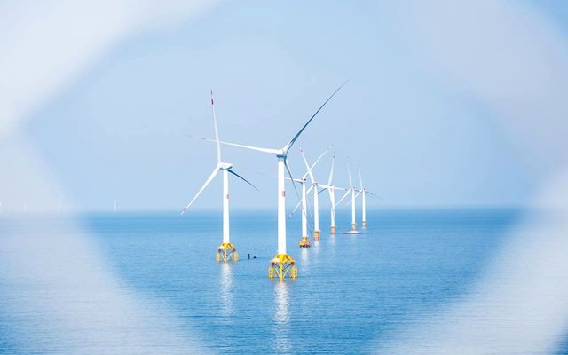
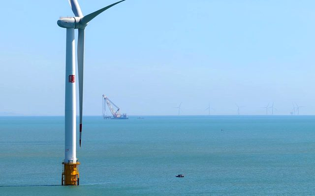
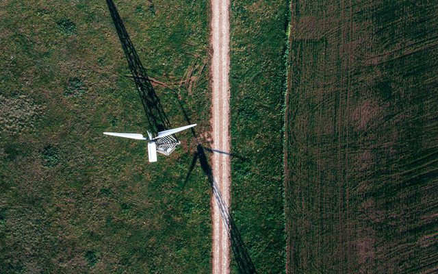
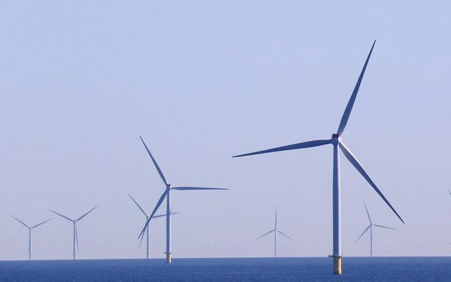
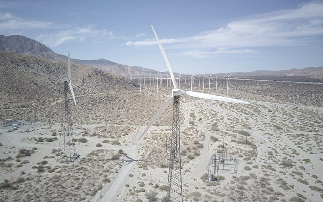
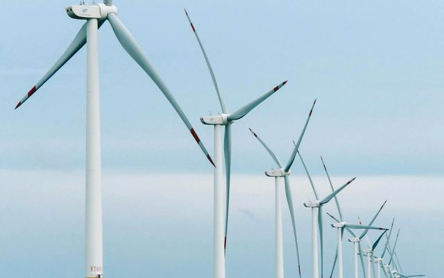
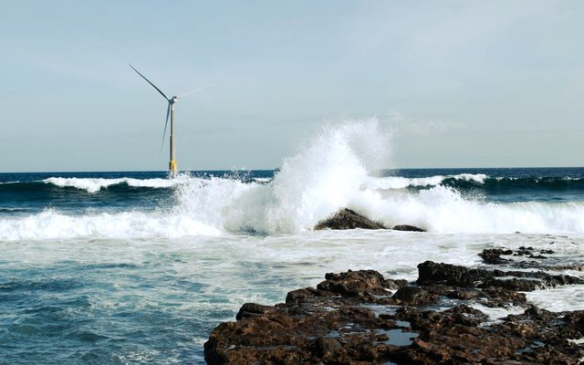
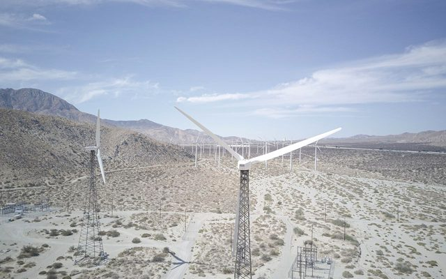
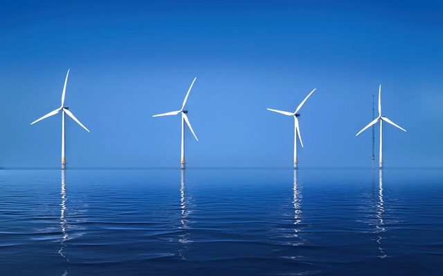
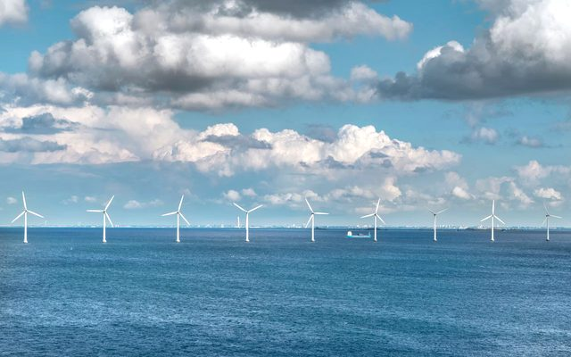
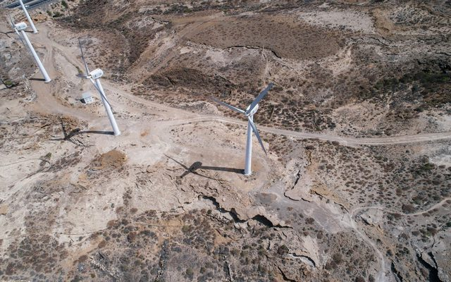
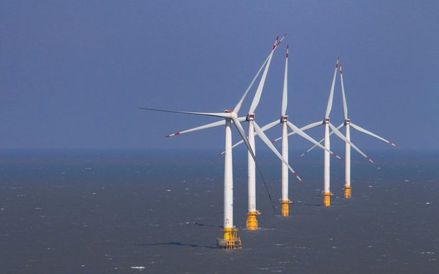
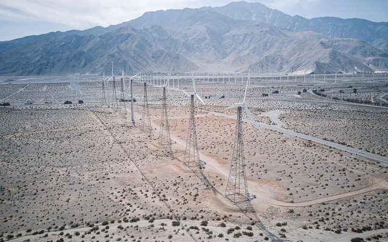
Links open external websites. Coal Controller Organisation does not endorse third-party content.
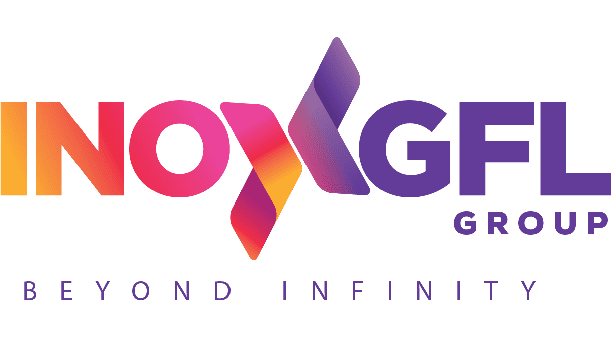
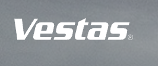
.svg)

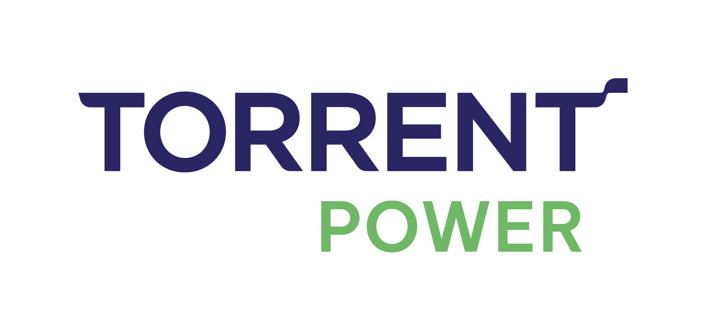

Disclaimer: Inclusion of an agency on this list does not constitute endorsement, empanelment, or recommendation by the Coal Controller Organisation or the Ministry of Coal, Government of India. Mine owners and project proponents are advised to conduct their own due diligence process before engaging any agency.
Disclaimer: Inclusion of an expert does not constitute endorsement, empanelment, or recommendation by the Coal Controller Organisation or the Ministry of Coal, Government of India. Users are advised to independently verify credentials and suitability before engaging any individual.